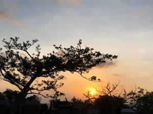
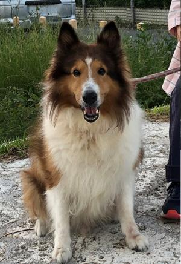
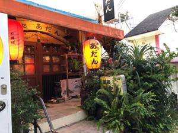

うるがいの話 ある日
最新: あだんうるがいとは 前提知識です
カニの画像をクリックすると『うるがいの話』サイトを表示します|
|
【うるがいの話】 うるがい(ｳﾙｶﾞｲ urugai)とは、『もずくがに』の名前でとても大きくなります。 |
|---|---|
|
|
【Got cat カミマヤーの話】 たながー（ﾀﾅｶﾞｰtanagaa）とは手長えびのことで、何種類かあり大きいのは車 エビぐらいになります。 |

|
【ぶながぁの話】 ぶながー(bunagaa)とは、赤い髪の毛、赤い身体、そして身長は１ｍ２０ｃｍ ぐらい、川の蟹を食べているの目撃された。場所は沖縄県国頭郡大宜味村のと ある村僕の隣近所に住んでいる爺さんから、聞いた話です。 |
|
|
【ギーマの話】 ギーマ(giima)とは、山原の里山に咲くスズランに似た、 花を付けます。実は食べられます、 気が付くと口の周りが紫になっています。 |
2021年10月02日 (土）あだん
17:12
  
昼からお腹に痛みが・・・、原因は、弁当か？、数時間後、カビの生えたコヒ
ーっだ！、数か月飲んでいなかったため、いつのまにか粉にカビが生えていた
のをヨメが気づき、ひどい部分は捨てたのだが、もったいなので微妙に白い色
が残っていたが、大丈夫だからと数日前から飲んでいた。今朝も、調子こいて
飲んだ。あと、５杯分で空になる筈だった。捨てた！、直ぐに捨てた、でもお
腹はまだ痛い。ヨメはお義母さんと床屋に行った、ヨメは、去年のコロナの緊
急宣言いらいである、スゴイ。
お腹の痛みが無かった午前中は、ユチューブに動画を載せてみた。少し、画像
が悪く失敗である。初めてはこうである、参加する事に意味があるのです。
では、初めての動画をみてみよう。
３連符の作品（ユチューブ）